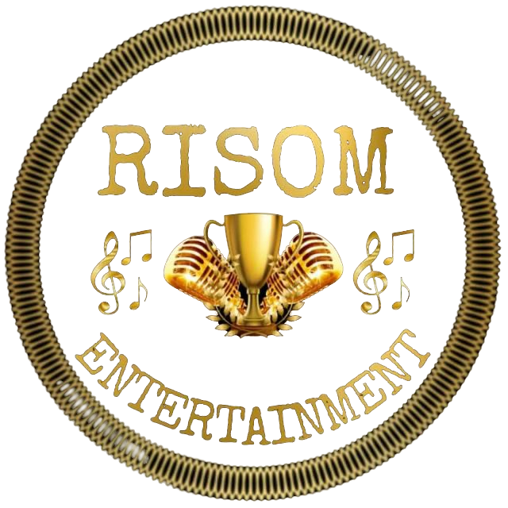
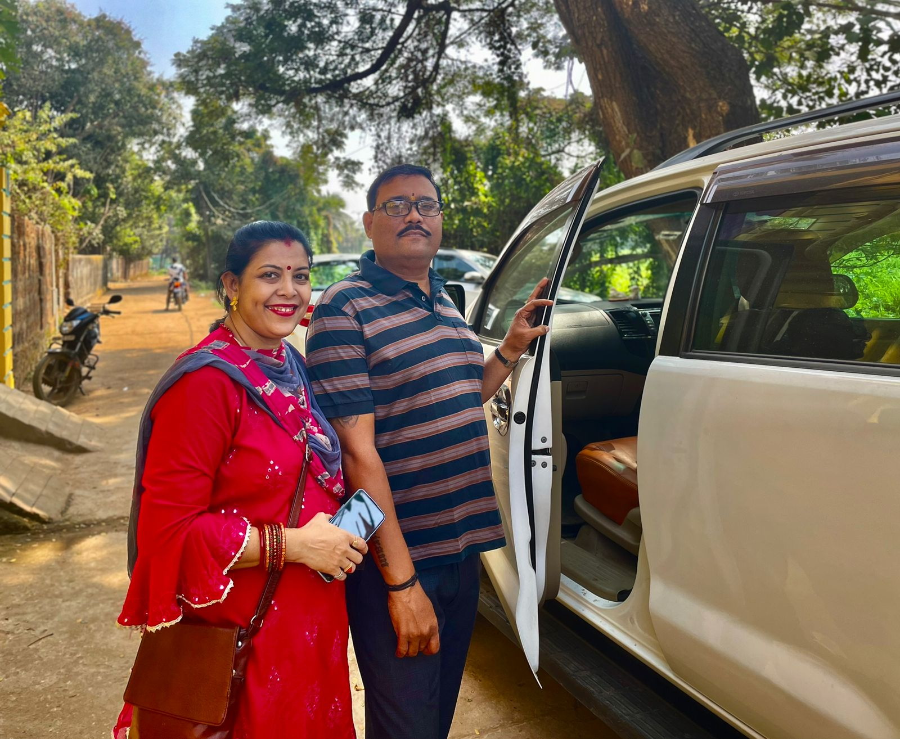

Estd:2023, reg.no:41082404338
Welcome to RISOM Musical Entertainment
Our Upcoming event...
Annual Event (2024)
Join us at Risom for an unforgettable event of music and celebration at our annual musical extravaganza! on Saturday, August 31st! Set against the backdrop of a beautiful summer evening, this event promises to showcase an incredible lineup of talented artists and musicians from various genres. Whether you're a fan of classical symphonies, jazz, rock, or pop, there's something for everyone to enjoy and participate. Don't miss out on this spectacular event that marks the highlight of our cultural calendar. We look forward to seeing you there!
About RISOM
RISOM is an inspiring organization dedicated to providing opportunities for aspiring singers who have been unable to pursue their passion due to various challenges. Founded with the mission to break down barriers and create an inclusive platform, RISOM empowers individuals from all backgrounds to showcase their talents and achieve their musical dreams. By offering access to resources and performance opportunities, RISOM ensures that every voice can be heard, regardless of past obstacles. Whether it's financial constraints, lack of access to professional training, or personal hardships, RISOM stands as a beacon of hope and support for those determined to sing and share their music with the world. Through events, workshops, and community engagement, RISOM not only nurtures talent but also fosters a sense of belonging and artistic growth.
Objects & Purposes
- To promote the cause of Musical Event, Cultural activities, Music School amongst individuals as well as institutions in and around the state of Orissa to encourage Music for the benefit of mankind.
- To research, explore and investigate into the educational methods and models to make the learning process effective and to develop the creative potential of every student in order to create fully developed citizens with greater awareness, free from all sorts of weaknesses and capable of making an ideal society for the mankind.
- To initiate and implement exclusive, diversified career oriented education and training programme for the unemployed youth with emphasis on aspirants from the weaker section of the society including woman.
- To organize Musical Program, Seminars, discussions, Workshops, Radio & TV shows and News groups on internet on various burning issues on Educational, Technical, Spiritual, Socio-Economic, Ecology and Environment fronts.
- To set up, run, maintain, and assist hospitals, charitable dispensaries, maternity homes and child welfare centers, Orphanages, Old Age Homes and encourage social awareness regarding health, Yoga, clean environment to promote different Govt. programs like Swachha Bharat Etc.
- To award Fellowship, Scholarships, prizes and Medals etc. in accordance with the rules and by laws.
- To confer honorary awards or other Distinctions to people with proven excellence and achievements in life.
- To promote Music activities, Literacy, Sports Cultural activities.
- To grant relief in case of cyclones, floods, earthquakes, famines, epidemics and other instances and other instances of natural calamities, national defense and distress and to give proper direction to other institutions doing similar works.
- To create social awareness against killer disease like Covid, AIDS and Hepatitis environment pollution and ecological unbalances, child & bonded labours, negligence of senior citizens as well as destitute people, harassment and oppression of women including people from weaker sections of the society.
- To cooperate and collaborate with others in the implementation of the development programmes to educate the youth by giving training on National Integration, Family Welfare, Population Control, Industrial Safety and Human Resources Development etc.
- To assist subscribe and cooperate with or affiliate with any others Society, Institutions whether incorporated or similar to do and enter into agreement with such organization as aforesaid for the fulfillment of its objectives.
- To apply and to accept any grant-in-aid from Government and procure subscription, donation or other contribution and procure, collect, accept gifts and endowment for fulfilling objectives.
Founders

Risom Musical Entertainment, founded by the visionary duo Udit Mohanty and Tulasi Mohanty, is dedicated to discovering hidden musical talents & providing them with the platform they need to shine.
website design by Soyam Mohanty